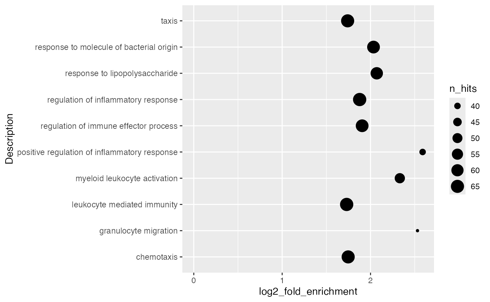
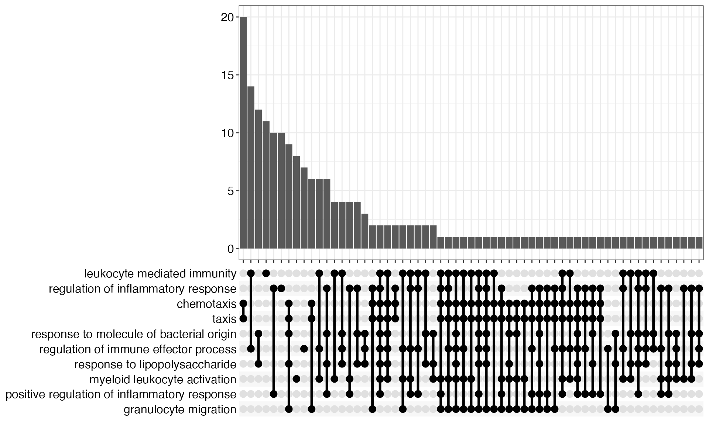
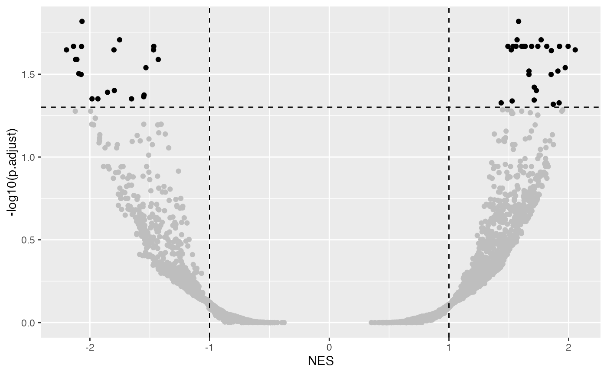

Topic 6-01: Visualization
Zuguang Gu z.gu@dkfz.de
2025-03-02
Source:vignettes/topic6_01_visualization.Rmd
topic6_01_visualization.RmdORA result
Single ORA result
library(GSEAtraining)
lt = readRDS(system.file("extdata", "ora.rds", package = "GSEAtraining"))
diff_gene = lt$diff_gene
diff_gene = convert_to_entrez_id(diff_gene)## ## gene id might be SYMBOL (p = 0.980 )## 'select()' returned 1:many mapping between keys and columns## ## clusterProfiler v4.14.4 Learn more at https://yulab-smu.top/contribution-knowledge-mining/
##
## Please cite:
##
## Guangchuang Yu, Li-Gen Wang, Yanyan Han and Qing-Yu He.
## clusterProfiler: an R package for comparing biological themes among
## gene clusters. OMICS: A Journal of Integrative Biology. 2012,
## 16(5):284-287##
## Attaching package: 'clusterProfiler'## The following object is masked from 'package:stats':
##
## filter
library(org.Hs.eg.db)## Loading required package: AnnotationDbi## Loading required package: stats4## Loading required package: BiocGenerics##
## Attaching package: 'BiocGenerics'## The following objects are masked from 'package:stats':
##
## IQR, mad, sd, var, xtabs## The following objects are masked from 'package:base':
##
## anyDuplicated, aperm, append, as.data.frame, basename, cbind,
## colnames, dirname, do.call, duplicated, eval, evalq, Filter, Find,
## get, grep, grepl, intersect, is.unsorted, lapply, Map, mapply,
## match, mget, order, paste, pmax, pmax.int, pmin, pmin.int,
## Position, rank, rbind, Reduce, rownames, sapply, saveRDS, setdiff,
## table, tapply, union, unique, unsplit, which.max, which.min## Loading required package: Biobase## Welcome to Bioconductor
##
## Vignettes contain introductory material; view with
## 'browseVignettes()'. To cite Bioconductor, see
## 'citation("Biobase")', and for packages 'citation("pkgname")'.## Loading required package: IRanges## Loading required package: S4Vectors##
## Attaching package: 'S4Vectors'## The following object is masked from 'package:clusterProfiler':
##
## rename## The following object is masked from 'package:utils':
##
## findMatches## The following objects are masked from 'package:base':
##
## expand.grid, I, unname##
## Attaching package: 'IRanges'## The following object is masked from 'package:clusterProfiler':
##
## slice##
## Attaching package: 'AnnotationDbi'## The following object is masked from 'package:clusterProfiler':
##
## select
res = enrichGO(gene = diff_gene, ont = "BP", OrgDb = org.Hs.eg.db, pvalueCutoff = 1)
res = add_more_columns(res)Let’s start with the enrichment table from the ORA analysis.
tb = res@result
head(tb)## ID Description GeneRatio
## GO:0002274 GO:0002274 myeloid leukocyte activation 51/779
## GO:0002237 GO:0002237 response to molecule of bacterial origin 63/779
## GO:0032496 GO:0032496 response to lipopolysaccharide 61/779
## GO:0050729 GO:0050729 positive regulation of inflammatory response 40/779
## GO:0050727 GO:0050727 regulation of inflammatory response 66/779
## GO:0002697 GO:0002697 regulation of immune effector process 63/779
## BgRatio RichFactor FoldEnrichment zScore pvalue
## GO:0002274 247/18986 0.2064777 5.032331 13.19430 5.149704e-22
## GO:0002237 375/18986 0.1680000 4.094542 12.51936 6.945328e-22
## GO:0032496 354/18986 0.1723164 4.199742 12.57018 8.355530e-22
## GO:0050729 162/18986 0.2469136 6.017845 13.26703 1.676133e-20
## GO:0050727 438/18986 0.1506849 3.672534 11.70487 3.037134e-20
## GO:0002697 410/18986 0.1536585 3.745008 11.62289 8.217123e-20
## p.adjust qvalue
## GO:0002274 1.409021e-18 1.099119e-18
## GO:0002237 1.409021e-18 1.099119e-18
## GO:0032496 1.409021e-18 1.099119e-18
## GO:0050729 2.119890e-17 1.653638e-17
## GO:0050727 3.072972e-17 2.397098e-17
## GO:0002697 6.928404e-17 5.404561e-17
## geneID
## GO:0002274 2268/7305/6556/22904/8692/3430/54209/50487/3696/3458/7474/9173/8807/8013/729230/3598/55509/6372/30817/5819/8291/3569/7097/2207/6283/80149/81501/6850/338339/11314/116071/6338/3965/5724/3576/136/712/8877/2624/2205/3579/2242/2204/5320/5359/728/2214/57126/10537/11027/6348
## GO:0002237 4843/6401/6556/50943/22904/5743/2920/3595/54209/3055/54/730249/5054/1440/6347/1594/57379/6648/942/7474/3552/29126/6590/6372/3553/10288/3620/948/3569/7097/10068/834/4283/6279/64332/133/4314/115362/10417/249/2634/9076/2921/6374/5196/2919/80149/717/64127/3965/3627/6373/5724/3576/2353/929/1051/2204/9516/1604/728/6891/11027
## GO:0032496 4843/6401/6556/50943/22904/5743/2920/3595/54209/3055/54/730249/5054/1440/6347/1594/57379/6648/942/7474/3552/29126/6590/6372/3553/10288/3620/948/3569/7097/10068/834/4283/6279/64332/133/4314/115362/10417/249/2634/9076/2921/6374/5196/2919/80149/717/64127/3965/3627/6373/5724/3576/2353/929/1051/2204/9516/1604/11027
## GO:0050729 8692/3430/5743/58484/54209/5008/50487/4210/5054/59341/3458/7474/9173/2633/729230/81030/3553/2867/3620/3569/7097/834/838/6279/64332/7941/2209/115362/2634/6280/6283/136/1051/4023/353514/5320/145741/3133/388125/6348
## GO:0050727 2268/6401/3082/50943/22904/8692/3430/55737/5743/58484/54209/5008/50487/25807/3055/54/730249/4210/5054/59341/3458/7474/8087/9173/2633/729230/7130/81030/3553/2867/3620/4907/3569/8870/7097/834/838/64116/90527/405753/6279/64332/7941/4314/2209/115362/56833/2634/6280/6283/6850/64127/136/2358/1051/6288/4023/8877/9021/338557/353514/5320/145741/3133/388125/6348
## GO:0002697 2268/4843/7305/50943/7037/2219/3383/54209/50487/54/3458/942/7474/57142/8809/8807/8013/29126/729230/3598/722/725/6372/3553/2867/30817/5819/948/3569/8547/64332/2209/26060/910/56833/10417/8741/6280/80149/6850/64127/11314/3965/5724/136/51237/3726/115727/64581/2624/2242/7293/441168/9516/1604/246778/6891/3107/3133/3134/57126/3106/387837
## Count n_hits n_genes gs_size n_totle log2_fold_enrichment z_score
## GO:0002274 51 51 779 247 18986 2.331227 13.19430
## GO:0002237 63 63 779 375 18986 2.033702 12.51936
## GO:0032496 61 61 779 354 18986 2.070301 12.57018
## GO:0050729 40 40 779 162 18986 2.589247 13.26703
## GO:0050727 66 66 779 438 18986 1.876776 11.70487
## GO:0002697 63 63 779 410 18986 1.904969 11.62289The mostly-used type of plot is to use simple statistical graphics for a small set of pre-selected gene sets.
par(mar = c(4.1, 20, 4, 1))
barplot(tb$n_hits[1:10], horiz = TRUE, names.arg = tb$Description[1:10], las = 1)Using ggplot2 is a better idea for visualizing data.
Number of DE genes in gene set may not be a good statistic, more commonly used statistics are log2 fold enrichment or -log10 p.adjust.
It is also common to add the p-values/adjusted p-values to the bars.
ggplot(tb[1:10, ], aes(x = log2_fold_enrichment, y = Description)) +
geom_col() +
geom_text(aes(x = log2_fold_enrichment, label = sprintf('%1.e', p.adjust)))By default, ggplot2 reorders labels alphabetically. You can set the name as a factor and specify the order there.
ggplot(tb[1:10, ], aes(x = log2_fold_enrichment, y = factor(Description, levels = Description))) +
geom_col()Points are also very frequently used.
ggplot(tb[1:10, ], aes(x = log2_fold_enrichment, y = Description)) +
geom_point() +
xlim(0, max(tb$log2_fold_enrichment[1:10]))Using dot plot, we can map a second statistic to the size of dots.
ggplot(tb[1:10, ], aes(x = log2_fold_enrichment, y = Description, size = n_hits)) +
geom_point() +
xlim(0, max(tb$log2_fold_enrichment[1:10]))
Even more, we can map a third statistic to the dot colors.
ggplot(tb[1:10, ], aes(x = log2_fold_enrichment, y = Description, size = n_hits, col = n_hits/gs_size)) +
geom_point()A volcano plot which is -log10(p.adjust) vs log2 fold enrichment:
ggplot(tb, aes(x = log2_fold_enrichment, y = -log10(p.adjust))) +
geom_point(col = ifelse(tb$log2_fold_enrichment > 1 & tb$p.adjust < 0.001, "black", "grey")) +
geom_hline(yintercept = 3, lty = 2) + geom_vline(xintercept = 1, lty = 2)With the volcano plot, we can easily see the preference of enrichment to the sizes of gene sets.
ggplot(tb, aes(x = log2_fold_enrichment, y = -log10(p.adjust), color = gs_size, size = n_hits)) +
geom_point() + scale_colour_distiller(palette = "Spectral")Visualizations from clusterProfiler
clusterProfiler provides many visualization functions (now these functions are all moved into a new enrichplot package).
## enrichplot v1.26.6 Learn more at https://yulab-smu.top/contribution-knowledge-mining/
##
## Please cite:
##
## Qianwen Wang, Ming Li, Tianzhi Wu, Li Zhan, Lin Li, Meijun Chen, Wenqin
## Xie, Zijing Xie, Erqiang Hu, Shuangbin Xu, Guangchuang Yu. Exploring
## epigenomic datasets by ChIPseeker. Current Protocols. 2022, 2(10): e585
cnetplot(res)
heatplot(res, showCategory = 10)
res = pairwise_termsim(res)
treeplot(res)
emapplot(res)
upsetplot(res)
Multiple ORA results
To visualize multiple ORA enrichment tables in one plot, we need to first prepare a data frame which combines results for a pre-selected gene sets.
lt = readRDS(system.file("extdata", "lt_enrichment_tables.rds", package = "GSEAtraining"))
set.seed(666)
terms = sample(lt[[1]]$ID, 10)
tb = NULL
for(nm in names(lt)) {
x = lt[[nm]]
x = x[x$ID %in% terms, colnames(x) != "geneID"]
x$sample = nm
tb = rbind(tb, x)
}
ggplot(tb, aes(x = sample, y = Description, size = -log10(p.adjust))) +
geom_point(color = ifelse(tb$p.adjust < 0.05, "black", "grey"))
GSEA result
Single GSEA result
gene_diff_score = readRDS(system.file("extdata", "gene_diff_score.rds", package = "GSEAtraining"))
gene_diff_score = convert_to_entrez_id(gene_diff_score)## gene id might be SYMBOL (p = 1.000 )## 'select()' returned 1:many mapping between keys and columns
gene_diff_score = sort(gene_diff_score, decreasing = TRUE)
res_gsea = gseGO(geneList = gene_diff_score, ont = "BP", OrgDb = org.Hs.eg.db, pvalueCutoff = 1)## using 'fgsea' for GSEA analysis, please cite Korotkevich et al (2019).## preparing geneSet collections...## GSEA analysis...## leading edge analysis...## done...
tb = res_gsea@result
head(tb)## ID Description
## GO:1902850 GO:1902850 microtubule cytoskeleton organization involved in mitosis
## GO:0030001 GO:0030001 metal ion transport
## GO:0006959 GO:0006959 humoral immune response
## GO:0007059 GO:0007059 chromosome segregation
## GO:0050778 GO:0050778 positive regulation of immune response
## GO:0036503 GO:0036503 ERAD pathway
## setSize enrichmentScore NES pvalue p.adjust qvalue
## GO:1902850 71 -0.4575756 -2.066037 4.557178e-06 0.01515642 0.01361922
## GO:0030001 480 0.3110690 1.581873 6.077152e-06 0.01515642 0.01361922
## GO:0006959 183 0.3792185 1.770206 1.479739e-05 0.01959315 0.01760596
## GO:0007059 163 -0.3325471 -1.751796 1.814754e-05 0.01959315 0.01760596
## GO:0050778 423 0.3110900 1.569225 1.964028e-05 0.01959315 0.01760596
## GO:0036503 38 -0.5403979 -2.137086 5.263340e-05 0.02144687 0.01927168
## rank leading_edge
## GO:1902850 1730 tags=51%, list=26%, signal=38%
## GO:0030001 2101 tags=40%, list=31%, signal=30%
## GO:0006959 1855 tags=42%, list=28%, signal=31%
## GO:0007059 1730 tags=39%, list=26%, signal=29%
## GO:0050778 1530 tags=31%, list=23%, signal=26%
## GO:0036503 1955 tags=58%, list=29%, signal=41%
## core_enrichment
## GO:1902850 991/5347/2316/7415/3303/4926/3925/23636/4134/1058/22974/2801/7283/9493/3833/8480/387/22919/332/55968/4085/9525/10252/8841/23291/8766/3837/891/10253/3611/7272/9183/10735/4751/9371/29899
## GO:0030001 581/8912/2906/8514/150/7225/596/5371/3786/5027/3060/6524/6553/6568/6556/1017/23479/815/9058/920/845/6366/816/859/783/3756/1272/6539/10786/6540/8913/3263/9962/5187/81614/1812/3358/25800/6530/2783/486/5144/55117/6334/7369/1909/1814/5336/3758/4985/134/4891/90134/26133/5319/88/5581/6262/3357/9254/6687/9512/3208/967/6528/2185/6375/2833/3738/3780/2702/478/3777/623/3755/7178/6335/5330/5294/3077/9446/5664/5170/825/6263/9472/5332/23327/3749/6569/6340/475/2512/5743/1020/777/931/7222/9498/10266/1258/5587/10021/3764/1535/10268/10063/776/5024/3458/5026/10058/8884/5534/10246/6534/610/11194/4734/5774/491/3603/6363/6622/482/4842/1910/8671/309/64116/6531/6546/1230/9368/4504/3772/1213/2903/2288/4308/3709/3356/6387/1447/2905/3741/6236/9001/6548/6527/4283/8989/5348/10050/6574/468/774/57468/6557/7779/5142/1236/495/3782/9187/3768/2056/2815/5354/3785/2395/5788/6833/6520/1141/117/1499/1813/6616/488/22853/9312/496/1392/1636/6376/1908/3750/169522/25998/3751/207
## GO:0006959 3439/596/1668/10584/6223/6357/6556/354/7124/6366/7432/6039/729230/3441/3263/6372/729/6370/5648/2919/2213/713/10563/3448/2920/5319/10850/3456/6362/6375/2219/735/6360/6354/6356/3848/5133/3553/931/3119/6364/4589/6846/1672/3458/3273/922/1511/10747/6407/1380/5968/6363/3574/731/11326/733/3442/5657/326/708/6368/5443/4852/10578/2821/671/975/6387/3347/4283/1669/3827/5650/1236/6156
## GO:0007059 991/998/5347/2316/6847/472/22924/3303/4926/11130/10744/4288/60/140609/23636/9184/701/4438/1063/1457/22974/2801/7283/699/9493/3833/7405/2669/2959/7153/10844/1642/387/22919/332/4085/9525/9232/6732/990/25836/8841/203068/11339/8766/3837/6599/891/1654/996/7156/7272/9319/9183/11065/10735/86/8780/4751/9698/11004/9371/29899
## GO:0050778 581/6778/3140/6895/5802/22841/596/9466/5027/3684/259197/10584/3565/6223/23643/6556/6714/354/7124/1967/920/27040/10666/9641/3109/10924/729230/8013/3428/4814/3263/729/5648/4321/2099/25800/10917/2213/713/5144/9261/3662/5336/5321/1520/5063/5319/10623/5581/640/3456/64135/3111/4669/10333/2207/6573/6375/2219/3077/735/5170/7294/10865/3055/7096/3805/1660/3848/1997/3566/3553/11118/26191/5608/7128/931/3592/3115/9958/5587/3119/3551/3764/7410/1535/7535/3458/11119/933/5580/3273/9447/922/3558/3113/1511/7409/910/3146/696/8678/4292/3554/3329/974/2268/10747/56848/8767/1380/3430/10612/4034/23476/3717/7301/6363/2853/731/11326/3600/733/4332/148066/3108/3702/924/708/916/3122
## GO:0036503 7327/10134/22926/9709/6400/7415/4287/9354/811/6048/857/3309/51439/5706/7466/3300/267/4121/51465/29978/9097/10277Similarly, we can visualize NES scores of gene sets.
ggplot(tb[1:10, ], aes(x = NES, y = Description)) +
geom_col(fill = ifelse(tb$NES[1:10] > 0, "red", "darkgreen"))The volcano plot:
ggplot(tb, aes(x = NES, y = -log10(p.adjust))) +
geom_point(col = ifelse(abs(tb$NES) > 1 & tb$p.adjust < 0.05, "black", "grey")) +
geom_hline(yintercept = -log10(0.05), lty = 2) + geom_vline(xintercept = c(1, -1), lty = 2)
The degree of enrichment is also dependent to the gene set sizes.
ggplot(tb, aes(x = NES, y = -log10(p.adjust), color = setSize)) +
geom_point() + scale_colour_distiller(palette = "Spectral")The ridge plot (joy plot/mountain plot) visualizes the distribution of gene-level scores in each gene set.
ridgeplot(res_gsea)## Picking joint bandwidth of 0.029And the classic GSEA plot:
gseaplot(res_gsea, geneSetID = 4)
gseaplot2(res_gsea, geneSetID = 4)